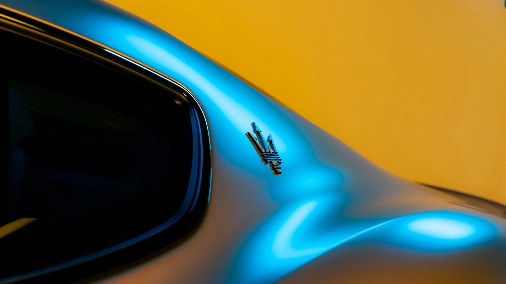
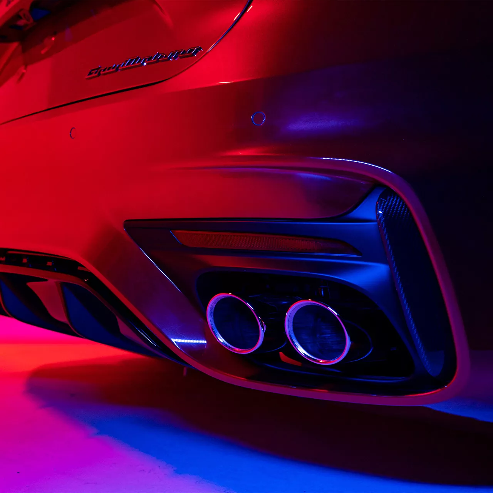

<!DOCTYPE html>
<html lang="ko">

<head>
    <meta charset="UTF-8">
    <meta http-equiv="X-UA-Compatible" content="IE=edge">
    <meta name="viewport" content="width=device-width, initial-scale=1.0">
    <title>rolls-royce</title>
    <link rel="stylesheet" href="./css/mainCss.css">
</head>

<body style="margin: 0 auto; background-color: black;">
    <navbar>
        <div class="left">
            <a href="./index.html" class="left"></a>
        </div>
        <div class="center">
            <a href="./rollRoyce.html"></a>
            <a href="./maserati.html"></a>
            <a href="./porsche.html"></a>
        </div>
    </navbar>


    <!-- 첫 페이지에 떠있는 동영상입니다.-->
    <!-- 확작명이 mp4(동영상) 와 같은 동영상 파일의 경우 src안에 경로를 바꿔주세요. -->
    <!-- <video id="tag1" class="mainImg" src="./img/rollsRoyceMainImg.mp4" autoplay loop muted></video> -->
    <!-- jpg(이미지) 또는 gif(움짤)의 경우 아래의 코드에서 src를 수정 바랍니다.-->
    <video id="tag1" class="mainImg" src="./img/maserati. video.mp4" autoplay loop muted></video>


    <!-- 글자 블럭 입니다. h1태그안에 있는 글자는 제목을 <p>태그 안에 있는것은 내용입니다. -->
    <div class="text" id="fade">
        <h1>The Others Just Travel</h1>
        <p>
          절대적인 파워와 궁극의 편안함. 공존할 수 없는 두 가치를 향한 열정의 끝에 마침내 다다른 이곳.
                    럭셔리 그랜드 투어링의 새로운 차원을 경험할 준비가 되셨습니까?
        </p>
    </div>


    <div style="height: 500px;"></div>

    


    <!-- 글자 블럭 입니다. h1태그안에 있는 글자는 제목을 <p>태그 안에 있는것은 내용입니다. -->
    <div class="text" id="fade">
        <h1>The original GT spirit</h1>
        <p>
          어느 누구도 레이싱카의 스피드와 럭셔리 차량의 조합을 상상하지 못할 때, 마세라티는 모두의 앞에서 새로운 길을 열었습니다.
<br>오리지널 GT의 개념은 그렇게 탄생했습니다. <br>75년 이상이 지난 지금도 , GT는 단순한 자동차 그 이상을 상징하는 라이프스타일입니다.
        </p>
    </div>


    <div style="height: 500px;"></div>


    <!-- 글자 블럭 입니다. h1태그안에 있는 글자는 제목을 <p>태그 안에 있는것은 내용입니다. -->
    <div class="text" id="fade">
        <h1>Audaciously forward</h1>
        <p>  장거리 여행은 단순히 운전대를 잡는 것보다 훨씬 더 짜릿하며, 잊을 수 없는 즐거움입니다.
          <br>새로운 GranTurismo는 빠르고, 아름답고, 세련되고, 혁신적인 경험을 새로운 차원으로 끌어올릴 것입니다.
        </p>
    </div>

    <!-- class="imgText" 로 감싸져 있는 블럭은 이미지와 글짜를 나란히 배치 시킵니다. -->
    <div class="imgText" id="fade">
        <!-- 아래의 이미지 태그 밑에 src 값을 변경해주어 이미지를 변경이 가능합니다. -->
        
        <div style="margin: 3%;">
            <!-- 아래의 h2 태그안에 있는 글자릅 바꾸어 소제목 변경이 가능합니다. -->
            <h2>Racing innovation</h2>
            <!-- 아래의 p 태그안에 있는 글자를 바꾸어 해당 블럭의 설명글을 변경이 가능합니다. -->
            <p>완전 전동화 모델 또는 V6 Nettuno 엔진을 탑재한 새로운 GranTurismo가  전례없는 성능으로 또 한 번 레이싱 트랙의 혁신을 가져올 것 입니다.
<br>여기에 최상의 편안함이 더해진다면 온몸에 짜릿한 전율을 느끼실 겁니다.</p>
        </div>
    </div>

    <!-- 위의 블럭과 동일하나 이미지와 설명에 대한 글의 위치를 바꾸었습니다. -->
    <div class="imgText" id="fade">
        <div style="margin: 3%;">
            <h2>Designed to last</h2>
            <p>GranTurismo의 디자인 철학은 새로운 세대에서도 계속됩니다.
              <br>과시없이 순수하고 시대를 초월하여 속도와 정교함의 원칙을 가장 잘 반영합니다. <br>이것이 마세라티의 감성입니다.</p>
        </div>
        
    </div>

    <div class="imgText" id="fade">
        <!-- 아래의 이미지 태그 밑에 src 값을 변경해주어 이미지를 변경이 가능합니다. -->
        
        <div style="margin: 3%;">
            <!-- 아래의 h2 태그안에 있는 글자릅 바꾸어 소제목 변경이 가능합니다. -->
            <h2>Make renovation</h2>
            <!-- 아래의 p 태그안에 있는 글자를 바꾸어 해당 블럭의 설명글을 변경이 가능합니다. -->
            <p>이탈리아 장인의 전통과 최첨단 기술이 만나 디테일에 대한 비교할 수 없는 관심을 통해 깨끗하고 의미 있는 분위기를 만들어냅니다.</p>
        </div>
    </div>

    <!-- 위의 블럭과 동일하나 이미지와 설명에 대한 글의 위치를 바꾸었습니다. -->
    <div class="imgText" id="fade">
        <div style="margin: 3%;">
            <h2>디지털세계를 위해 제작된</h2>
            <p>이탈리아 장인의 전통과 최첨단 기술이 만나 디테일에 대한 비교할 수 없는 관심을 통해 깨끗하고 의미 있는 분위기를 만들어냅니다.</p>
        </div>
        
    </div>
    <div class="imgText" id="fade">
        <!-- 아래의 이미지 태그 밑에 src 값을 변경해주어 이미지를 변경이 가능합니다. -->
        
        <div style="margin: 3%;">
            <!-- 아래의 h2 태그안에 있는 글자릅 바꾸어 소제목 변경이 가능합니다. -->
            <h2>100% 순수 이탈리안 열정</h2>
            <!-- 아래의 p 태그안에 있는 글자를 바꾸어 해당 블럭의 설명글을 변경이 가능합니다. -->
            <p>독점적인 소재, 신중한 디자인, 매혹적인 질감, 디지털 화면, 손으로 제작한 사운드 엄선된 조명:GranTurismo의 인테리는
            이탈리아 건축과 장인 정신을 현대적으로 재해석한 것입니다.</p>
        </div>
    </div>

    <!-- 위의 블럭과 동일하나 이미지와 설명에 대한 글의 위치를 바꾸었습니다. -->
    <div class="imgText" id="fade">
        <div style="margin: 3%;">
            <h2>공예와 기술의 절묘한 균형</h2>
            <p>천연가죽이나 오픈 포어 목재 등 고급질감과 알칸타라, 카본, 재생 ECONYL 섬유 등의 기술 소재를 폭넓게 선택하여
            GranTurismo의 스포티한 의도를 아방가르드한 조화와 함께 구현하는 인테리어에 사용할 수 있습니다.</p>
        </div>
        
    </div>
  
        <!-- 아래의 이미지 태그 밑에 src 값을 변경해주어 이미지를 변경이 가능합니다. -->


        <div class="imgText" id="fade">
            <!-- 아래의 이미지 태그 밑에 src 값을 변경해주어 이미지를 변경이 가능합니다. -->
            
            <div style="margin: 3%;">
                <!-- 아래의 h2 태그안에 있는 글자릅 바꾸어 소제목 변경이 가능합니다. -->
                <h2>레이서의 관점</h2>
                <!-- 아래의 p 태그안에 있는 글자를 바꾸어 해당 블럭의 설명글을 변경이 가능합니다. -->
                <p>포메이션 랩 준비:12.2인치 디지털 대시보드는 운전자에게 미래형 조종석에서 기대할 수 있는 가시성을 제공합니다.
                선택할 수 있는 4가지 레이아웃과 유용한 위젯으로 가득 차 있어 각 운전 구성이 더욱 풍성해집니다. 눈높이에 대한
              정보를 제공하기 위해 헤드업 디스플리에(옵션)도 있습니다.</p>
            </div>
        </div>

        <!-- 위의 블럭과 동일하나 이미지와 설명에 대한 글의 위치를 바꾸었습니다. -->
        <div class="imgText" id="fade">
            <div style="margin: 3%;">
                <h2>여행 파트너</h2>
                <p>빠르고 반응성이 뛰어나며 지능적입니다. 마세라티 인텔리전트 어시스턴으(MIA) 멀티미디어 시스템은 맞춤형 다중 사용자를
                경험, 음성명령, 스마트폰 통합(Apple Car Android Auto)을 위해 Android Auto OS로 구동되며 지속적으로 무선 업데이트됩니다.</p>
            </div>

            
        </div>

    <a href="#tag1"><h1>최상단으로 이동하기</h1></a>
</body>

<script src="./js/mainjs.js"></script>

</html>2
